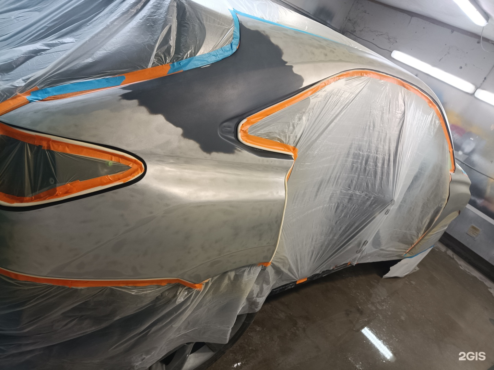
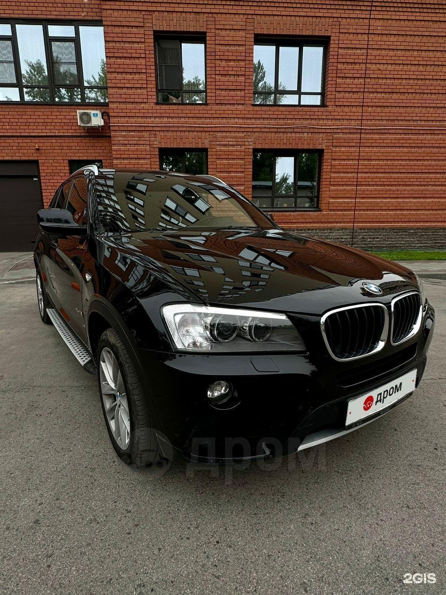
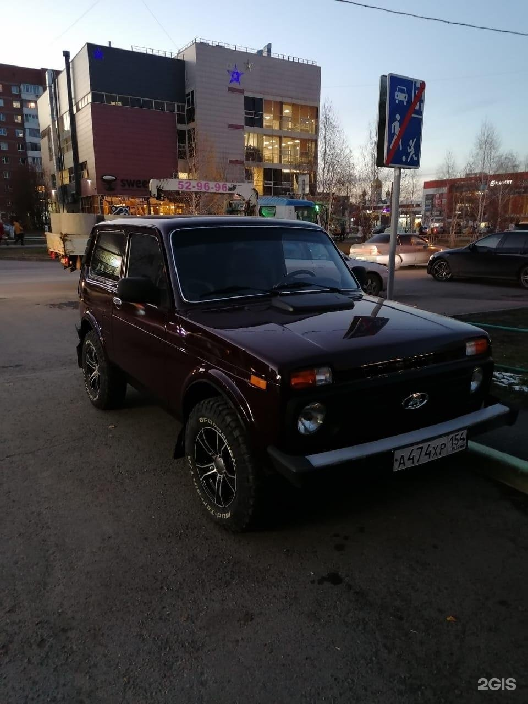
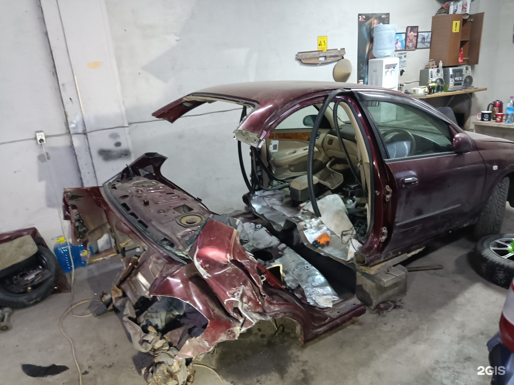
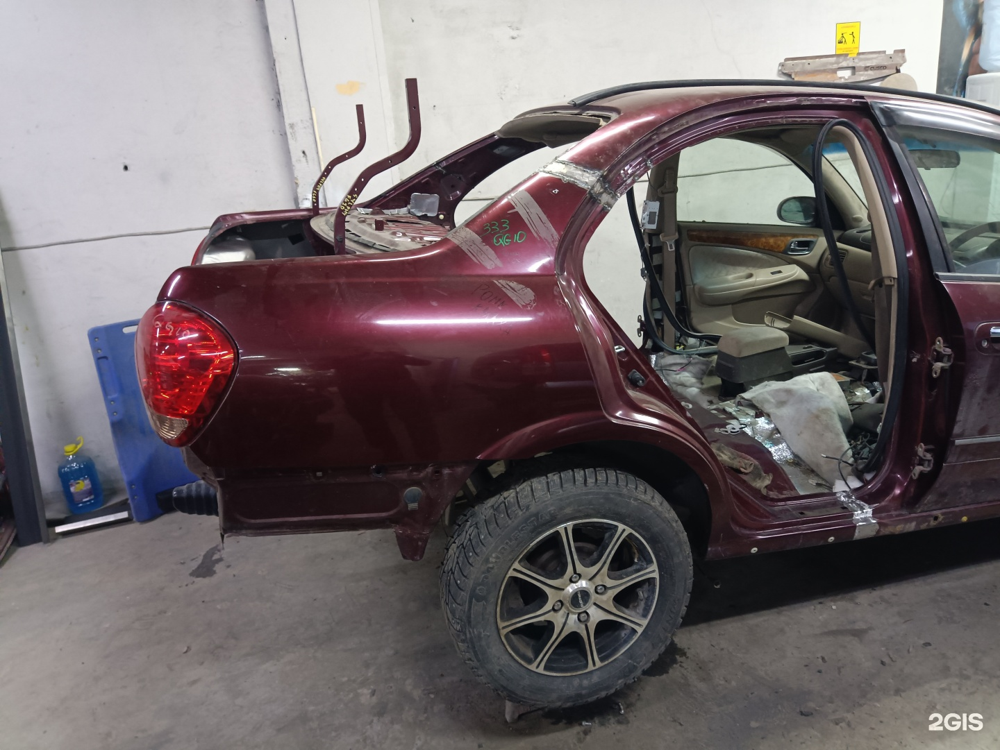

01
Восстановление геометрии
Восстановление геометрии кузова после ударов и перекосов.
Центр кузовного ремонта в Барнауле: геометрия, покраска, полировка, вмятины, сварка. Сначала осмотр — затем смета и работа.
Основные направления центра: геометрия, покраска, полировка, вмятины, сварка и полный кузовной ремонт.

Восстановление геометрии кузова после ударов и перекосов.

Удаление вмятин, в том числе без покраски где возможно.

Полировка кузова после ремонта и восстановление блеска.




Примеры работ центра Алтай.
Фиксируем повреждения и согласуем объём ремонта.
Готовим кузов: рихтовка, сварка, шпаклёвка при необходимости.
Красим, полируем, устраняем вмятины — по плану.
Проверяем цвет и результат перед выдачей.
Адрес и маршрут — в 2ГИС.
АЛТАЙ
г. Барнаул, пр. Космонавтов, 10/7
Ежедневно · с 09:00